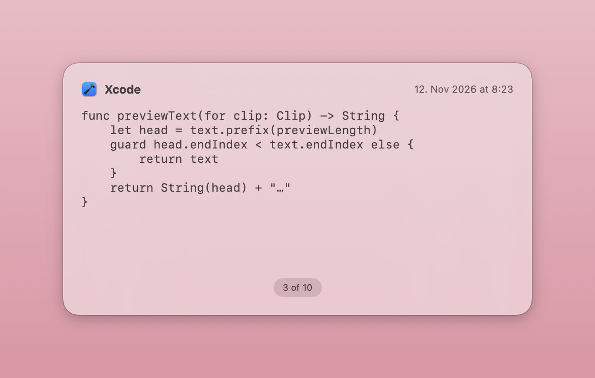
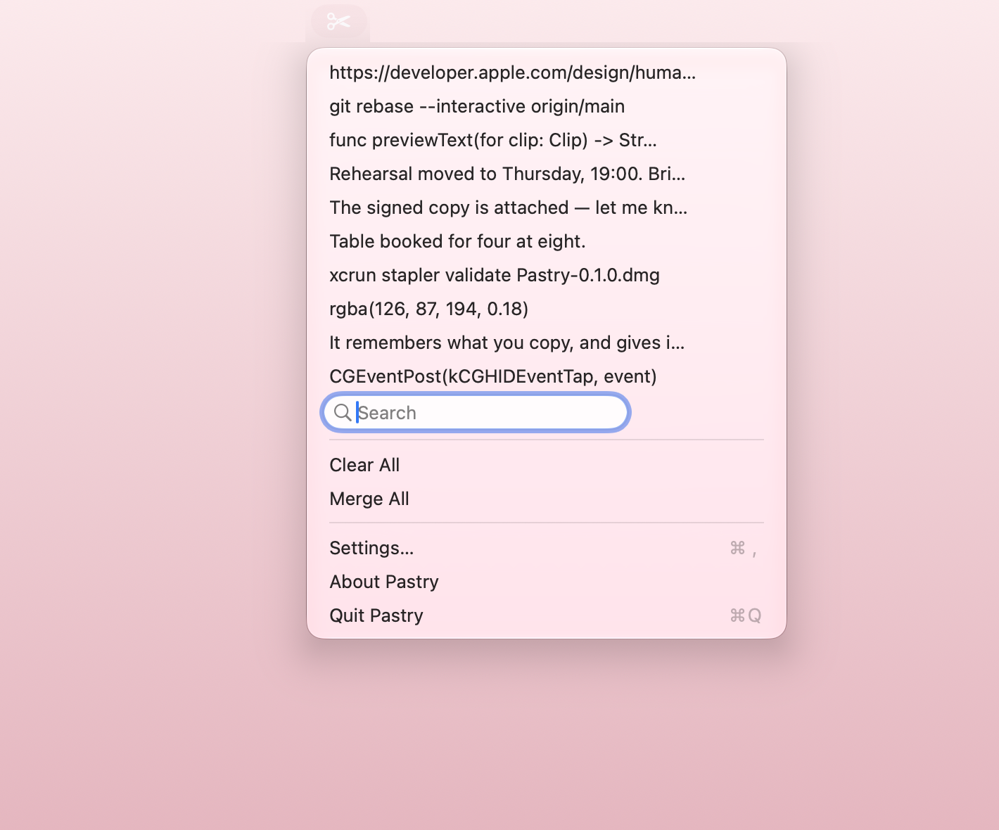

How it works
Hold ⇧⌘V, tap, let go
Tap V to walk back through your history in a panel on screen. Let go of the modifiers and the clipping you stopped on is pasted where you were typing. One gesture, and your hands never leave the keyboard.

Or just look
Click the scissors in the menu bar for your recent clippings, with a search field to filter them. Choosing one pastes it.

What else
- Move aroundArrow keys, j and k, or the number keys to jump straight to a position. Home and End for the ends.
- Prune as you goDelete removes the clipping on screen without closing the panel.
- MergeJoin the whole history into one clipping.
- Your hotkeyChange ⇧⌘V to whatever you like. It takes effect immediately, no relaunch.
- Your limitsDecide how many clippings to keep and how many to show.
- Starts with youLaunches at login, if you want it to.
Quiet by design
Pastry has no network access at all.
It sends nothing anywhere. There is no account, no sync, no telemetry and no crash reporting. Your clipboard never leaves your Mac, and its contents never reach the system log.
Clippings that an application marks as concealed — password fields, mostly — are skipped and never stored. Your history lives in a directory only you can read, and deleting something removes it from disk straight away rather than at some later moment.
The privacy policy says the same thing at greater length, because the App Store asks for one.
Open source
Pastry is MIT licensed. The whole of it is readable, including the design record — what was decided, and more usefully what turned out to be wrong.
It is a Swift rewrite of Flycut, which was based on Jumpcut. No Objective-C from either remains, but the idea and the shape of it are theirs.